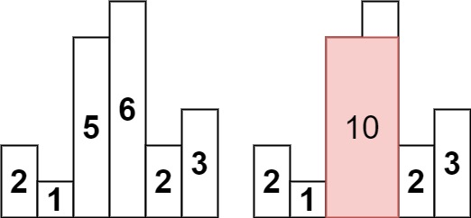
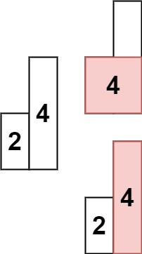

题面
给定 n 个非负整数，用来表示柱状图中各个柱子的高度。每个柱子彼此相邻，且宽度为 1 。
求在该柱状图中，能够勾勒出来的矩形的最大面积。
示例 1:

输入： heights = [2,1,5,6,2,3]
输出： 10
解释： 最大的矩形为图中红色区域，面积为 10示例 2：

输入： heights = [2,4]
输出： 4提示：
1 <= heights.length <=1050 <= heights[i] <= 104
思路
- 和上一题（每日温度）一样是单调栈，但方向反过来：上一题找更高的，本题找更矮的
为什么上一题递减栈 本题递增栈
核心原则：栈里存的是"还没找到答案的元素"，遇到答案时弹出计算。
- 每日温度：找右边第一个更高的 → 遇到更高的才弹 → 栈里保持递减（高的来了才触发）
- 最大矩形：找左右第一个更矮的 → 遇到更矮的才弹 → 栈里保持递增（矮的来了才触发）
每日温度（上一题） | 最大矩形（本题） | |
|---|---|---|
找什么 | 右边第一个更高的 | 左右两边第一个更矮的 |
什么时候弹 | 遇到更高的 | 遇到更矮的 |
栈的单调性 | 递减（栈底大栈顶小） | 递增（栈底小栈顶大） |
弹出时算什么 | 距离 | 面积 |
弹出时怎么算面积
弹出栈顶 tops 时：
- 高度：
heights[tops] - 右边界：当前的
i（就是那个更矮的，把它挤出来的） - 左边界：弹出后的新栈顶
stack[-1]（左边第一个比它矮的） - 宽度：
i - stack[-1] - 1（两个边界之间的距离）
用 2 1 5 6 2 3 走一遍
i=0: 2 栈底是-1，入栈 栈：[-1, 0]
i=1: 1 1<2 → 弹出0，高=2，宽=1-(-1)-1=1，面积=2 栈：[-1, 1]
i=2: 5 5>1 → 入栈 栈：[-1, 1, 2]
i=3: 6 6>5 → 入栈 栈：[-1, 1, 2, 3]
i=4: 2 2<6 → 弹出3，高=6，宽=4-2-1=1，面积=6
2<5 → 弹出2，高=5，宽=4-1-1=2，面积=10 ★
2>1 → 入栈 栈：[-1, 1, 4]
i=5: 3 3>2 → 入栈 栈：[-1, 1, 4, 5]
清空剩余：
弹出5，高=3，宽=6-4-1=1，面积=3
弹出4，高=2，宽=6-1-1=4，面积=8
弹出1，高=1，宽=6-(-1)-1=6，面积=6
最大面积 = 10 ✓注意 i=4 弹出下标 3 时，宽度是 4 - 2 - 1 = 1，这里的 2 是弹出 3 之后露出来的新栈顶，不是弹出的那个元素本身。
栈底哨兵 1
栈初始放一个 -1，处理"左边没有更矮的柱子"的边界情况。比如弹到最后一个元素时，stack[-1] = -1，宽度 = i - (-1) - 1，刚好等于从最左端开始算，不需要额外 if 判断。
代码实现
class Solution:
def largestRectangleArea(self, heights: List[int]) -> int:
stack = []
stack.append(-1)
ans = 0
for i, v in enumerate(heights):
while stack[-1] != -1 and heights[stack[-1]] >= v:
tops = stack.pop()
h = heights[tops]
b = i - stack[-1] - 1
ans = max(ans, h * b)
stack.append(i)
n = len(heights)
while stack[-1] != -1:
tops = stack.pop()
h = heights[tops]
b = n - stack[-1] - 1
ans = max(ans, h * b)
return ans- 易错点：
- while 条件是 `stack[-1] != -1` 不是 `stack`：栈里只剩哨兵
-1时stack不为空，但heights[-1]会访问到数组最后一个元素（Python 负索引），导致错误 - 宽度里的 `stack[-1]` 是弹出后的新栈顶：不是弹出的那个元素本身，是左边界
- 遍历结束后要清空栈：有些柱子右边没有更矮的，遍历时没被弹出，需要用第二个 while 处理，此时右边界用
n（数组末尾之后） - 栈底放 -1 哨兵：省去"栈空时左边界是谁"的特判
- 复杂度：时间 O(n)（每个元素最多入栈一次出栈一次），空间 O(n)（栈）